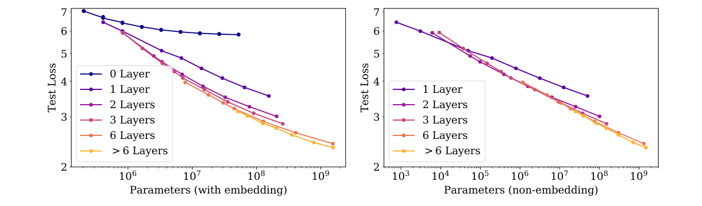
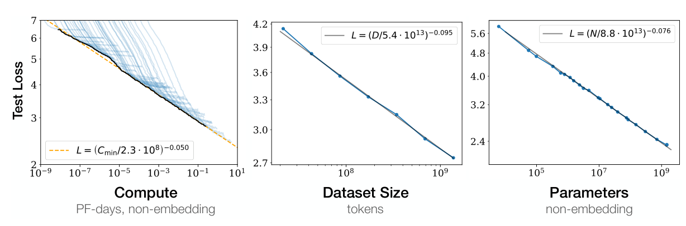
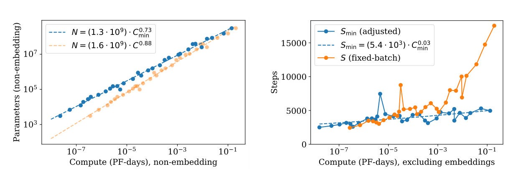

把「越大越好」量成一条直线
Kaplan 等人 2020 年在 OpenAI 写的《Scaling Laws for Neural Language Models》。他们训练了上百个大小、数据量、训练时长各不相同的 Transformer，发现测试损失随参数量、数据量、算力都是平滑的幂律，在双对数图里是直线。这条直线准到可以在花钱之前算出：一笔算力，该分多少给模型、多少给数据。结论有点反直觉：算力多了，主要用来把模型做大，数据只需缓慢增加，训练也不必跑到收敛。
- 正文只走一条线：花钱之前说不清怎么分 → 怎么测 → 剥掉干扰 → 三条直线 → 模型和数据配套 → 训练多久 → 算力怎么分 → 证据 → 局限。这篇没有「和别人比分数」的结果表，结果就是图和拟合出来的公式，所以每一步的证据直接跟在那一步后面。
- 公式、符号表、概念注解（幂律、非嵌入参数、C ≈ 6ND、临界批量等）、完整数字表、相关工作和当时背景，都在页尾附录里，默认折叠，标明对应原文第几节。
- 小数字例子都验算过：为讲解设定的标「示意」，我按原文参数代入算的标「推算」。
- 这一篇不发明新模型，研究对象是 004 Transformer（只用解码器那半，GPT 路线见 006 GPT-1、007 GPT-2）。损失是交叉熵，001 NPLM 讲过；训练用 005 Adam。后来的发展见 010 Chinchilla、011 GPT-3。
1要解决的问题：花钱之前，没人说得清怎么分
到 2019 年，语言模型一个比一个大：GPT-1、BERT、GPT-2（15 亿参数）。但每次放大，都要先拍几个板：模型多宽多深，用多少数据，训多久，批量和学习率多大。每个都靠经验，各篇论文各说各话。
这几件事还互相牵制。训练的总算力约等于 6 × 参数量 N × 数据量 D（C ≈ 6ND，推导见附录 B）。预算固定时，模型取大，数据就只能少；反过来也一样。
直接的办法，为什么都不行
| 直接做法 | 行不通的原因 |
|---|---|
| 把候选方案都训一遍 | 大模型太贵，试不起；而且想知道的恰恰是还没训的大模型会怎样。 |
| 只说「越大越好」 | 没有数量，没法做预算。大多少值得？线性、对数、还是很快饱和？004 的 Table 3 C 组每个维度只有 2 到 3 个点，看不出曲线形状。 |
| 每个模型都训到收敛 | 当时的默认做法。要发现它浪费算力，必须把训练步数也当变量去测。 |
| 模型大了，数据按比例加 | 要加多少？之前的工作（Hestness 等 2017）说要超线性增长，本文发现只需亚线性。不测就不知道。 |
| 小模型调好，凭经验放大 | 没有公式，放大多少倍、得到多少收益全靠感觉。小模型上调好的批量、学习率放大后也未必还最优。 |
训练里还混着干扰：数不数嵌入层的参数，结果就不一样；批量不合适，曲线会偏；没训到收敛的和训到收敛的没法直接比。
所以需要的是一套从便宜的小实验预测昂贵的大训练的定量规律。它要满足三条：把干扰剥掉；范围足够大，才看得出是不是幂律；几条规律能互相推出，才能回答「怎么分」。后面几步依次做到。
2做法：一次只让一个量当瓶颈
作者没有发明新模型，用的就是只有解码器的 Transformer。他们做的是测量：结构固定，系统地改规模，量出一条曲线。
固定的是：WebText2 数据集（WebText 的扩充版，多收了 2018 年的 Reddit 外链）、50257 的 BPE 词表、1024 个 token 的上下文。变的是：参数量 N（不含嵌入，768 到 15 亿）、数据量 D（2200 万到 230 亿 token）、形状（层数、宽度、头数、FFN 宽度）、训练步数和批量。测的是测试集上每个 token 的交叉熵损失 L（单位 nat，越低越好）。
核心做法是一次只让一个量当瓶颈：测 L(N) 时，数据给足、训练到近收敛，排除 D 的影响；测 L(D) 时，模型给足，排除 N 的影响。瓶颈只有一个时，损失就由它单独决定，而且是干净的幂律。
读这篇要记一件事：公式里的常数（Nc、Dc、Cc）依赖词表和分词，没有物理意义，损失的绝对值也不能跨分词器、跨数据集比。有意义的是指数 α，它决定「多一点规模，损失降多少」。
3第一步：先把干扰剥掉
只数「非嵌入参数」
如果把词向量表（嵌入层）也算进模型大小，小模型里它占比很大，大模型里占比很小，参数量就不能代表模型的计算能力。图 3 是一个小例子。
所以作者定义 N = 不含词向量表和位置编码的参数。每层约 12·d_model² 个参数，合计 N ≈ 12·n_layer·d_model²（数法见附录 B，精确写法见附录 A 式 2.1）。

这也说明嵌入矩阵可以做得更小而不明显影响性能（作者引用了同期工作）。真正在做计算的是 Transformer 的层，不是查词表。
模型的形状几乎无关
固定 N，改变形状：深而窄还是浅而宽，头数多少，FFN 宽度比例。结果是：宽高比 d_model/n_layer 变 40 倍，损失只变几个百分点（原文 Figure 5 说明）。(n_layer, d_model) = (6, 4288) 和 (48, 1600) 参数量相近，损失相差在 3% 以内。原文还标了一句：多花 22% 的算力，可以补偿 1% 的损失上升，也就是形状选得不好，代价很小，算力一补就回来。
为什么会这样？原文只给了一个猜测：如果更深的 Transformer 相当于更浅模型的集成，就能解释与层数无关，并引用了对 ResNet 的类似说法。这是作者的假说，本文没有验证。
含义是：只要不是太浅（少于 2 层）、形状不极端，规模 N 是主要变量，形状是次要变量。这是后面的公式里只出现 N、不出现 n_layer 和 d_model 的前提。
这一步对着第 1 节说的「混杂因素」：剥掉嵌入表、忽略形状之后，一个数 N 就能描述模型。
4第二步：损失对规模是三条直线
在另外两个量不当瓶颈时，分别测损失对 N、D、C 的关系，得到三条幂律（精确写法见附录 A 式 1.1 到 1.3，拟合值见附录 E）：
| 谁是瓶颈 | 实验设置 | 公式 | 指数 α | 常数 |
|---|---|---|---|---|
| 参数量 N | 数据足够，训到近收敛 | L(N) = (Nc/N)α_N | 0.076 | Nc ≈ 8.8×10¹³ |
| 数据量 D | 大模型（36 层，d=1280），早停 | L(D) = (Dc/D)α_D | 0.095 | Dc ≈ 5.4×10¹³ token |
| 算力 Cmin | 数据足够，模型取最优大小，批量足够小 | L(Cmin) = (Ccmin/Cmin)α_C | 0.050 | Ccmin ≈ 3.1×10⁸ PF-day |
作图后，三条都是直线：

横轴跨 6 个数量级以上，仍然是直线。原文摘要写「部分趋势超过七个数量级」，1.2 节写算力跨 8 个、N 跨 6 个、D 跨 2 个数量级，各处说的是不同的量。作者说：没看到上端偏离趋势的迹象，虽然性能最终必须变平，不可能降到 0。
这条直线的意思
以 N 为例，αN = 0.076。N 乘 2，损失乘 2−0.076 = 0.949，降 5.1%；N 乘 10，损失乘 0.84，降 16%。从 100 万翻倍还是从 10 亿翻倍，比例都一样，这就是幂律「不随你站的位置变」。
这有两面。稳定地变好：每多一个数量级，收益固定，不会突然没用。越来越贵：绝对降幅在缩小（4.02 到 3.37 降 0.65，2.38 到 1.99 降 0.39，1.99 到 1.67 降 0.32），而每一步要多花 10 倍的参数。想让损失减半，只靠加参数要 21/0.076 ≈ 9100 倍。指数小意味着规模换性能是一条很陡、很贵的路，但它可预测。
三个指数的比较（我的验算）：N 或 D 或 C 每乘 10，损失分别降 16%、20%、11%。但它们不是三个独立的旋钮：C ≈ 6ND，算力涨时收益要分给 N、批量、步数几处，所以 αC 比任何一个都小（关系式在附录 A 式 1.8）。还要注意，三条线是在「另外两个不当瓶颈」时分别测的，不是同一次实验里同时看到的。
这一步对着「越大越好没有数量」：现在有了数量。
5第三步：模型和数据怎么配套
L(N) 假设数据无限，L(D) 假设模型无限。真实情况是两个都有限。作者用一个联合公式 L(N, D) 同时描述（写法见附录 A 式 1.5）。它满足两个极限：D 趋于无穷时还原成 L(N)，N 趋于无穷时还原成 L(D)。这个形式是拟合驱动选出来的，不是推导出来的，三条选择原则见附录 C。
怎么读：
- 数据是瓶颈时，模型涨了几乎没用。同样 10 亿 token，10 亿参数的模型得 2.86，100 亿参数的得 2.82。
- 数据充足时，模型涨了收益大。220 亿 token 下，108 到 109 参数，损失从 2.84 降到 2.43。
- 过拟合有代价。N = 100 亿、D = 220 亿时 L = 2.19，比无限数据的 1.99 高约 10%。
作者把过拟合的代价 δL = L(N, D)/L(N, ∞) − 1 量化出来（附录 A 式 4.2、4.3），发现它只取决于一个组合 N0.74/D。所以每次模型增大 8 倍，数据只需增加约 5 倍就能避免惩罚（80.74 = 4.66）。避免过拟合需要的数据是 D ≳ 5×103·N0.74（式 4.4，阈值取随机种子造成的约 0.02 的损失波动）。N = 109 时约 2.3×1010 token，恰好和 WebText2 全量相当。这就是原文说的：小于 109 参数的模型在 WebText2 上几乎没有过拟合，最大的模型会轻度过拟合。
联合拟合的参数略异于单变量的，最小的数据集（缩小 1024 倍，约 2×107 token）拟合不好，作者推测它可能属于语言建模的另一个机制，见附录 E。
这一步对着「模型大了数据按比例加」：数据只需随模型亚线性增长（N0.74），不用等比例。精确写法见附录 A 式 4.1 到 4.4。
6第四步：训练多久
前面的 L(N) 是训到收敛的值。要回答「不训到收敛划不划算」，得知道训到某一步时的损失。作者给出的形式是两项相加：
第一项是模型大小的限制，训到无限久也越不过去；第二项是训练不够久的残差，步数越多越小。总损失 = 收敛后能到的值 + 还没收敛的残差。
公式里用的是 Smin，不是实际步数 S。原因是批量：批量越大，每步的梯度越准，需要的步数越少；但批量大到一定程度，多出来的样本对梯度改善有限，只是浪费。这个拐点叫临界批量 Bcrit（图 7）。它只取决于当前的损失，不取决于模型大小：损失每降 13%，Bcrit 约翻一倍。作者把实际步数换算成「批量恰当时的最少步数」Smin，不同批量的曲线才能放在同一个坐标里（换算式见附录 A，验算见附录 B）。
作者说这个拟合不完美，但考虑到公式的简单，相当有说服力；小 S 时拟合一般，因为幂律形式的学习曲线在训练很早期就不适用。还有一个实用结论：训练曲线的形状大致与模型大小无关，所以可以用训练初期的曲线外推很久之后的损失。
这一步对着「训练多久」：它把「没训到收敛」变成了公式里可以算的一项。
7第五步：一笔算力怎么分
这是全文最重要的结论。把上面两项看成互相拉扯：算力 C 固定时，模型取大，第一项变小，但每步更贵、步数更少，第二项变大；模型取小则相反。最优在两项平衡处。
对 N 求导令其为 0（附录 B.1 到 B.2），最优时第二项 = (αN/αS) × 第一项 ≈ 0.1 × 第一项，所以总损失约为收敛损失的 1.1 倍。人话：计算最优的做法，是让训练停在比收敛损失高约 10% 的地方。
原文附录 B.3 把它和「训到离收敛 2% 以内」的常见做法对比，在达到同一损失时：
| 对比量 | 计算最优（偏离 10%）相对常见做法（偏离 2%） |
|---|---|
| 参数量 | 多 2.7 倍 |
| 参数更新步数 | 少 7.7 倍（约 0.13 倍） |
| 总算力 | 少 65%（约 0.35 倍） |
我验算了第一行：(1.10/1.02)1/0.076 ≈ 2.70。
把最优条件展开，就是各个量随算力增长的幂律：
| 量 | 指数 | 来源 | 含义 |
|---|---|---|---|
| 最优模型大小 N | 0.73 | 直接拟合（式 6.1，Figure 14 左） | 算力 ×10，N 约 ×5.4 |
| 最优批量 B | 0.24 | 推导：由 B ∝ L−4.8、L ∝ C−0.05 得出 | 算力 ×10，批量约 ×1.7 |
| 最优串行步数 S | 0.03 | 推导（式 6.2），与 Figure 14 右的实测吻合 | 几乎不变，原文说甚至可能与指数 0 一致 |
| 数据量 D = B·S | 0.27 | 原文 Table 6 / 1.1 节 | 算力 ×10，数据约 ×1.9 |

原文的直观说法：算力每增 10 倍，最优模型约增 5 倍，数据处理量约增 2 倍；数据量增长的大部分被用来增大批量（并行度），串行步数几乎不增加。原文 Figure 3 画的是极端情形：算力增加十亿倍，模型应增加 100 万倍以上，批量增加约 100 倍，串行步数增加不到 10 倍。
用 Table 6 的幂律代入（N = 1.3×109·C0.73，D = 2×1010·C0.27，S = 5.4×103·C0.03，L = (3.1×108/Cmin)0.050，C 以 PF-day 计），我算了几个点：
| Cmin（PF-day） | 最优 N | 最优 D | 最优串行步数 | 预测损失 |
|---|---|---|---|---|
| 1 | 1.3×10⁹（13 亿） | 2×10¹⁰（200 亿） | 约 5400 | 2.66 |
| 100 | 3.7×10¹⁰（370 亿） | 6.9×10¹⁰（690 亿） | 约 6200 | 2.11 |
| 1000 | 2.0×10¹¹（2000 亿） | 1.3×10¹¹（1300 亿） | 约 6600 | 1.88 |
这是外推：原文实验的最大 N 只有 15 亿，表中大部分行远超实验范围，只是把公式往外延伸，原文自己也指出公式在更大尺度会自相矛盾（第 9 节）。
为什么「大模型少看点数据」反而划算？因为大模型的样本效率更高：同样看这些数据，它学到更多（原文 Figure 2、19）。所以用大模型、少看点、早点停，比用小模型训到收敛更省算力。这和之前「把一个模型训到收敛」的默认做法相反。
这一步对着「训到收敛」：它在算力上是浪费的。精确推导见附录 A 式 B.5、1.7、1.8。
8证据：这些结论有多牢
各步的实验已经跟在各步后面。这里补三条旁证，都在检查「这套规律是不是只在一个角落成立」。
- Transformer 比 LSTM 好在哪（原文 Figure 7）。在上下文靠前的 token 上，LSTM 与 Transformer 一样好；在靠后的 token 上，LSTM 约 100 个 token 之后基本不再改善，Transformer 一直到整个上下文都在改善。按参数量比较，Transformer 渐近地胜出，原文的解释是它更好地利用了长上下文。这给 RNN 到注意力的路线补了一个数量上的证据。
- 跨数据集泛化（原文 Figure 8）。只在 WebText2 上训练的模型，在 Books、Wikipedia、Common Crawl 等其他文本上的损失，也随模型大小按平滑幂律下降，和 WebText2 的损失之间只差一个几乎恒定的偏移。右图显示泛化只取决于训练分布上的损失，与训到了哪一阶段、模型深度都无关。所以降低 WebText2 的损失，不是在过拟合这个数据集。我补充的：这只在几种英文文本上验证过，不等于所有任务或语言。
- 两条独立途径得到同一个分配（原文 6.1、6.2 节）。一条是直接拟合实验点：N ∝ C0.73、L ∝ Cmin−0.050；另一条是从 L(N, Smin) 推导：αCmin 约 0.054、N ∝ C0.71。原文说前者「excellent agreement」，后者与 0.73「within a few percent」。我核算时发现，推导用的 0.054 用原文自己的参数算不出来，自洽的值是 0.052，对应 N 指数约 0.68，与实测 0.73 差约 7%，吻合程度可能不如原文说的好，见附录 J。这不推翻「N 主要随算力增长」的结论。
原文把结论收在这几句：语言模型的表现随模型大小、数据、算力平稳可预测地提升；大模型更省样本；算力一定时，最优做法是训练很大的模型、在远未收敛时就停下。他们预期更大的模型会更好、更省样本，并写下「大模型可能比大数据更重要」。
9局限和后来
作者自己做的压力测试
作者没有止步于外推，发现自己的两组公式在很大规模下会打架：避免过拟合所需的数据按 D ∝ C0.54 增长，而算力最优训练实际用的数据只按 D ∝ C0.27 增长，慢得多。一旦被数据卡住，损失按 L(D) 下降，换算成对算力的依赖更平缓。两条曲线终会相交（图 10）：C* ∼ 104 PF-day，N* ∼ 1012 参数，D* ∼ 1012 token，L* ∼ 1.7 nats/token（式 6.8，作者强调数值高度不确定，指数稍有不同就差一个数量级）。
作者给了两层解读。保守的一层：缩放定律在这个点之前就会失效。作者的猜想（原文用 conjecture）：这个交点可能意味着自然语言里可靠的信息被榨干了，L* 可能是自然语言每个 token 的熵的粗略估计。这很容易被误读成「本文预测 1012 参数就到头了」，原文的口径是一个高度不确定的推测，而且是从本文预测的数据需求推出来的。
其他局限
- 所有实验在 ≤ 15 亿非嵌入参数、一个数据集（WebText2）、一种架构上。之后的实际训练比这大 100 倍以上，外推是否成立是后来才被检验的。
- 没有理论解释。作者承认对任何提出的缩放定律都没有扎实的理论理解，所以指数 0.076、0.095 由什么决定，本文给不出答案。
- 指标是损失，不是任务表现。平滑的损失下降会换来多少具体能力，没测（原文第 8 节说平滑的量变可能掩盖质变，「more is different」）。
- 所有主实验用同一个 25 万步的学习率调度，训练长度和调度绑在一起。
后来
被继承。「先在小规模拟合曲线，再外推到大规模」成了大模型研发的常规办法；011 GPT-3（1750 亿参数、约 3000 亿 token）的方向和「算力多了主要放大模型」一致（作者群的大部分成员参与了 GPT-3，GPT-3 是否引用本文作为设计依据，待核实）。
被修正。本文最重要的分配结论 N ∝ C0.73、D ∝ C0.27，被 2022 年 DeepMind 的 010 Chinchilla 重新测定：模型和数据应当大致等比例增长（指数都接近 0.5），按这个标准，GPT-3 一类模型是「训练不足」的（具体数字以 010 为准，这里待核实）。本文自己没有解释为什么得出不同结论。后世的看法之一是本文对不同长度的训练用了同一个固定的学习率调度，使中途停下的模型没处于最佳状态，数据量被低估（待核实）。
我补充的：这提示读这类论文的一条原则，幂律拟合出的指数会随实验设置变（调度、规模范围、是否计入嵌入参数），不能把 0.73 当成自然常数。不过本文的主体没被推翻：「损失对规模是幂律」这个结构、「N、D、C 要一起考虑」、「计算最优不等于训到收敛」，后来的研究都延续了，变的是最优分配的比例。
作者用理想气体定律作比：这些规律像不依赖微观细节（结构、形状）的宏观关系，他们希望将来有一个「统计力学」来解释现在看到的「热力学」。截至本文，没有这个理论。
附录 · 想深入再看
下面每一块都默认折叠，标题里写明了对应的原文章节；正文用不到它们。标「我补充」的，是原文之外我加的说明；标「待核实」的，是我没有核对清楚的。
A · 公式和符号表（原文第 1、2、4、5、6 节与附录 B）
| 符号 | 是什么 |
|---|---|
| L | 测试集上每个 token 的交叉熵损失，单位 nat；exp(L) 是困惑度 |
| N | 非嵌入参数量（不含词向量表和位置编码） |
| D | 训练数据量（token 数） |
| C、Cmin | 训练算力（PF-day，不含嵌入）；Cmin 是「每步都用最合适批量时」达到同一损失所需的最少算力 |
| B、Bcrit | 批量（token 数）；临界批量 |
| S、Smin | 实际参数更新步数；批量足够大时所需的最少步数 |
| E | 处理的样本数，E = B·S |
| αN、αD、αC、αS、αB | 各幂律的指数，是真正有意义的量 |
| Nc、Dc、Cc、Sc、B* | 各幂律的常数，依赖词表和分词，没有物理意义 |
三条单变量幂律（原文 1.2 节）：
联合公式与过拟合（原文第 4 节）：
训练时长与临界批量（原文第 5 节）：
参数量与算力的账（原文 2.1 节）：
计算最优分配（原文附录 B、第 6 节）：
最后一式类似电阻并联：算力要同时花在 N、B、S 三处，三处指数的倒数相加，总指数比任何一个单项都小。
B · 概念注解：幂律、对数坐标、非嵌入参数、C ≈ 6ND、过拟合、临界批量、nat（原文第 1、2 节、5.1 节、附录 B）
幂律与对数坐标
| 类型 | 形状 | 规模翻倍时 |
|---|---|---|
| 线性 | y = a·x | 结果翻倍 |
| 指数 | y = a·bx | x 每加一个固定量，y 乘固定倍数；越来越陡 |
| 幂律 | y = a·xk | 结果乘一个固定比例，与你站在哪个规模无关 |
L = (Nc/N)α 两边取对数：log L = α·log Nc − α·log N，是 log L 对 log N 的直线，斜率 −α。所以双对数图里直线 = 幂律在这个范围内成立，弯了 = 规律失效，越陡 = 加规模越划算。坐标轴的一格是「×10」，不是「+1」。差 10 倍是一个数量级；本文参数量从 768 到 15 亿，差 6 个多数量级。
外推：测过 10³ 到 10⁹ 参数，如果这条直线真是定律，就可以延长它预测 10¹¹ 参数。这是本文最大的价值（用便宜的小模型预测昂贵的大模型），风险也在这里：延长到范围外，是押注规律不变。作者承认没有理论解释这些幂律，所以什么时候能信任外推是不确定的。
「非嵌入参数」怎么数
每层：注意力有 Q、K、V、输出 4 个 d_model×d_model 矩阵，共 4·d_model²；FFN 两个矩阵 d_model×d_ff、d_ff×d_model，d_ff = 4·d_model 时共 8·d_model²；合计约 12·d_model²。忽略偏置和层归一化。
- n_layer = 12，d_model = 768：N = 12×12×768² = 84,934,656 ≈ 8500 万。词向量表另有 50257×768 ≈ 3860 万，不算在 N 里。
- n_layer = 48，d_model = 1600：N ≈ 14.7 亿，是原文参数范围的上限。
- (n_layer, d_model) = (6, 4288)：N ≈ 13.2 亿。
C ≈ 6ND：为什么是 6
算力是训练里总共做的浮点运算次数（FLOPs，一次加或乘算一次）。每个参数在前向里大致参与一次乘加，所以前向约 2N 次运算每 token；反向传播的运算量约是前向的两倍（4N），合计 6N；训 D 个 token 就是 C ≈ 6ND。原文式 2.2 还有一项与上下文长度有关的 2·n_layer·n_ctx·d_model，n_ctx = 1024 且 d_model ≫ n_ctx/12 时占比很小，被忽略，这是本文的一个前提。
原文用 PF-day 作单位：1 petaFLOP/s（每秒 10¹⁵ 次）持续算一天 = 10¹⁵ × 86400 = 8.64×10¹⁹ 次运算。算例（推算）：N = 10⁹、D = 2×10¹⁰ 时，C = 1.2×10²⁰ ≈ 1.4 PF-day。原文之外的参照（我的算法）：GPT-3（1750 亿参数、3000 亿 token）约 6 × 1.75×10¹¹ × 3×10¹¹ ≈ 3.15×10²³ ≈ 3650 PF-day，是否与 GPT-3 论文自己给的算力一致，待到 011 核实。
过拟合、早停、epoch、样本效率、nat
epoch：训练集完整过一遍。过拟合：模型开始背训练集，训练损失继续降，没见过的测试数据上的损失反而变差。早停：同时监控测试损失，不再下降就停，取最好的点；本文对所有有限数据的实验都这样做，并对所有模型用 10% dropout。直觉：1000 道练习题，记忆力超强的学生做 5 遍就把答案背下来了，遇到新题还是不会；给他 10 万道题，他就背不下，只能学规律。
样本效率：把损失降到某个值需要看多少数据，越少越高。本文发现大模型样本效率更高（原文 Figure 2、19）。直觉：同一本教材，聪明的学生读一遍就懂。这和「为了省钱应该训小模型」的直觉相反，是第 7 节结论的基础。
nat：损失用自然对数算。L = 2.3 对应困惑度约 10，L = 3.0 约 20。原文 4.1 节第一条原则说，改变词表或分词只会让损失整体乘一个因子，所以 L 的绝对值不能跨分词器、跨数据集比。
临界批量：式子怎么读（原文 5.1 节，引用 McCandlish 等 2018）
批量大小默认 2¹⁹ = 524,288 token（512 条 × 1024 token）。批量大，每步梯度准，步数少，总时间短；批量大到一定程度，多出的数据对梯度改善有限，是浪费。式 5.1 的小数字读法：训练了 S = 2·Smin 步（S/Smin − 1 = 1），就必有 E = 2·Emin，对应 B = E/S = Emin/Smin = Bcrit。也就是以临界批量训练，步数和样本数都是各自最小值的 2 倍（原文原话）。
Bcrit 只取决于损失（原文 Figure 10）。代入式 5.3 验算：L = 3.0 时 Bcrit ≈ 1.1×10⁶ token，L = 2.5 时约 2.7×10⁶；损失每降 13%，Bcrit 约翻倍（0.87−4.76 ≈ 1.94）。本文大多数模型固定用 B = 2¹⁹，并不在 Bcrit 上，所以要换算：L = 3.0 时 Bcrit/B ≈ 2.14，Smin = S/3.14，Cmin = C/1.47（我的验算）。一句话：Cmin 是每步都用最合适批量时达到该损失最少需要的算力，Smin 是最少步数；后面的最优分配都用它们表达。
幂律值怎么读（推算）
L(D) 在 N 足够大时：D = 10⁸ 得 3.50，10⁹ 得 2.82，10¹⁰ 得 2.26，2.2×10¹⁰（约 WebText2 全量）得 2.10。D 乘 10，损失乘 0.80，降 20%。
C · 联合公式怎么选出来；形状无关的假说；训练曲线的一个推测（原文 3.1、4.1、5.2 节）
作者为 L(N, D) 选形式时用了三条原则（原文 4.1 节）：
- 词表变化只会让损失整体缩放一个因子，公式应当允许通过调整 Nc、Dc 来吸收；
- 极限必须对：D→∞ 还原为 L(N)，N→∞ 还原为 L(D)；
- 在 D = ∞ 附近可以按 1/D 的整数次幂展开。作者自己说这一条的理论支持「明显较弱」：过拟合应与数据集的方差或信噪比有关，而它按 1/D 缩放。
作者说：「我们的 L(N, D) 与数据拟合得很好，这才是最重要的理由」。验证极限：D→∞ 时 Dc/D→0，剩 [(Nc/N)α_N/α_D]α_D = (Nc/N)α_N；N→∞ 时第一项→0，剩 (Dc/D)α_D。N 与 D 不对称（D 的指数是 1，N 的是 α_N/α_D），是第三条原则造成的；作者说类似的对称形式也行，但要多一个参数。
N0.74 还是 N0.80：用 Table 2 的联合拟合 α_N/α_D = 0.076/0.103 ≈ 0.74；改用单变量拟合的 α_D = 0.095 则是 0.80。两个数差别不大，提醒读者指数的第二位小数对应的是拟合误差。作者还做了配套推论：过拟合越严重，早停应当越早（原文 5.3 节、式 5.7，给出早停步数的下界），本解读不展开。
形状无关的假说（原文 3.1 节、第 7 节）：如果更深的 Transformer 在效果上相当于更浅模型的集成，就能解释与层数无关。这是作者的假说，没有在本文验证。我补充的联系：004 的 Table 3 A、B 组里头数、d_k 带来的 BLEU 差异（零点几到 0.9），在本文看来属于次要变量，但两篇任务和指标不同，只作参考。
训练曲线的推测（原文 5.2 节末）：学习曲线后期损失大致是二次型，幂律应当反映损失曲面 Hessian（二阶导数矩阵）特征值的谱，而这种幂律不随模型大小变，说明 Hessian 谱大致与模型大小无关。这是假说，未验证，也不影响后面的推导。
D · 训练设置（原文第 2 节、第 3 节开头）
- 模型：主要是只有解码器的 Transformer，参数化为 (n_layer, d_model, d_ff, d_attn, n_heads)，上下文长度 n_ctx = 1024。也训练了 LSTM 和 Universal Transformer（复用参数的循环式 Transformer）做对比。
- 数据：WebText2，共 2030 万篇文档、96 GB 文本、1.62×10¹⁰ 个词（wc 统计），经 BPE 分词后 2.29×10¹⁰ token，其中 6.6×10⁸ 留作测试集。另用 Books Corpus、Common Crawl、英文维基、公开网络书籍测试泛化。
- 优化：Adam，固定 2.5×10⁵ 步，批量 512 条 × 1024 token，3000 步线性预热后余弦衰减到 0；超过 10 亿参数的模型因显存限制改用 Adafactor。作者试了多种学习率和调度，说收敛时的结果基本与调度无关（2.2 节）。
- 范围：N 从 768 到 15 亿（非嵌入）；D 从 2200 万到 230 亿 token。
- 词表：BPE，50257 个。
E · 完整数字表：拟合参数、L(N, D) 算例、算力最优的两张表（原文 Table 2、3、5、6、附录 B.3）
原文 Table 5（单变量拟合），按原文列出：
| 幂律 | 指数 | 常数（依赖分词） |
|---|---|---|
| L(N) | αN = 0.076 | Nc = 8.8×10¹³ 参数（非嵌入） |
| L(D) | αD = 0.095 | Dc = 5.4×10¹³ token |
| L(C)，固定批量 | αC = 0.057 | Cc = 1.6×10⁷ PF-day |
| L(Cmin)，校正批量 | αCmin = 0.050 | Ccmin = 3.1×10⁸ PF-day |
| Bcrit | αB = 0.21 | B* = 2.1×10⁸ token |
| Smin | αS = 0.76 | Sc = 2.1×10³ 步 |
原文 Table 2（L(N, D) 联合拟合）：αN = 0.076，αD = 0.103，Nc = 6.4×10¹³，Dc = 1.8×10¹³。与单变量拟合略有出入，原文 4.2 节解释：这里拟合的是完整的 L(N, D)，不是 L(N, ∞) 或 L(∞, D)。最小的数据集（缩小 1024 倍，约 2×10⁷ token，一个 epoch 只有 40 次参数更新）拟合不好，作者推测这样小的数据集可能属于语言建模的另一个机制。
原文 Table 3（L(N, Smin) 拟合）：αN = 0.077，αS = 0.76，Nc = 6.5×10¹³，Sc = 2.1×10³。
原文 Table 6（计算最优分配）：Nopt = 1.3×10⁹·Cmin0.73；B ≪ Bcrit = B*/L1/α_B = 2.0×10⁶·Cmin0.24；Smin = 5.4×10³·Cmin0.03（下界）；Dopt = 2×10¹⁰·Cmin0.27（1 个 epoch）。
L(N, D) 完整算例（我按 1.2 节单变量参数代入；表中「只看 L(N)」是 D = ∞，「只看 L(D)」是 N = ∞）：
| N | D（token） | L(N, D) | 只看 L(N) | 只看 L(D) | 谁是瓶颈 |
|---|---|---|---|---|---|
| 10⁸ | 2.2×10¹⁰ | 2.84 | 2.83 | 2.10 | 模型 |
| 10⁸ | 10⁹ | 3.02 | 2.83 | 2.82 | 两者接近 |
| 10⁹ | 10⁹ | 2.86 | 2.38 | 2.82 | 数据 |
| 10⁹ | 2.2×10¹⁰ | 2.43 | 2.38 | 2.10 | 模型 |
| 10¹⁰ | 2.2×10¹⁰ | 2.19 | 1.99 | 2.10 | 两者都有 |
| 10¹⁰ | 10⁹ | 2.82 | 1.99 | 2.82 | 数据 |
L(N) 对照（式 1.1，推算）：10⁶ → 4.02，10⁷ → 3.37，10⁸ → 2.83，10⁹ → 2.38，10¹⁰ → 1.99，10¹¹ → 1.67。
最优分配的自洽检查（我的验算）：用 Table 6，Cmin = 1 PF-day 时 N = 1.3×10⁹，L(N, ∞) = (8.8×10¹³/1.3×10⁹)0.076 ≈ 2.33，乘 1.1 得 2.56，与直接用 L(Cmin) 算的 2.66 相差约 4%。D 的换算：式 6.7 的定义部分是临界批量训练（C = 2·Cmin）且数据只看一遍，D = 2Cmin/(6N)；Cmin = 1 PF-day 时 D = 2×8.64×10¹⁹/(6×1.3×10⁹) ≈ 2.2×10¹⁰，与 Table 6 的 2×10¹⁰ 一致。
偏离最优大小的代价（原文附录 B.4）：模型在最优大小的 0.6 到 2.2 倍内，只需多花约 20% 的算力。用更小的模型可能更合理，因为推理更便宜（原文：考虑推理成本时，较小的模型是有用的）；2.2 倍大的模型少 45% 的步数、多 20% 算力，在有足够并行硬件时训练更快。这是今天「实际模型比计算最优更小、数据更多」的伏笔。
F · 压力测试的推导和交点（原文 6.3 节）
- 避免过拟合所需的数据（式 4.4 / 6.6）：D ∝ N0.74 ∝ C0.54。
- 计算最优训练实际用的数据（式 6.7，数据只看一遍）：D ∝ C0.26 到 C0.27（式 6.7 写 0.26，Table 6 写 0.27），增长慢得多。
- 所以随算力增加，计算最优训练所用数据比「不过拟合所需数据」增长慢得多，迟早数据不够，即使一条数据都不重复。
- 一旦被数据卡住，损失按 L(D) ∝ D−0.095 下降，换算成对算力的依赖是 C−0.03，比 L(Cmin) ∝ C−0.050 平缓。两条曲线终会相交。
交点（式 6.8）：C* ∼ 10⁴ PF-day，N* ∼ 10¹² 参数，D* ∼ 10¹² token，L* ∼ 1.7 nats/token，数值高度不确定。两层解读：保守的是缩放定律在这个点之前就会失效；作者的猜想是模型再大也无法在没有「性质上不同的数据」时继续提高，L* 可能是自然语言每个 token 的熵（不可压缩的部分）的粗略估计。作者还做了噪声底的类比：如果在每个输入后附加随机噪声，所有损失加上一个常数，有意义的是离噪声底还有多远；即使 L 在这里看起来变平，离底线更近一点也可能对应质上的巨大提升。
G · 相关工作与当时的背景（原文第 1、7 节）
- 模型规模的上涨：引言引用的先进模型包括 GPT-1、BERT、GPT-2 和其他几个（按参考文献，后三个是 XLNet、RoBERTa、T5）。GPT-2（2019，15 亿参数）刚发布不久，本文最大模型尺寸和它相当。
- 同一批人：作者几乎全在 OpenAI，包括 GPT-2 的主要作者 Alec Radford 和 Jeffrey Wu；Tom Brown 后来是 GPT-3 的第一作者（待核实）。本文的优化版 Transformer 实现由 Tom Brown、Rewon Child、Scott Gray、Alec Radford 开发（原文开头的贡献说明）。Dario Amodei 全程提供指导。临界批量的前序工作 McCandlish、Kaplan、Amodei 等 2018，是同一批人的延续。
- Hestness 等 2017：原文称为文献中与本文最接近的工作，也研究了模型大小与数据量的缩放。他们得到数据量随模型大小超线性增长，本文是亚线性（N0.74）。
- Rosenfeld 等 2019：对多种数据集同时拟合模型大小与数据量，形式与本文类似；原文脚注称本文完成后该工作也出现，做了类似预测。（原文参考文献里 RRBS19a 与 RRBS19b 实为同一篇 arXiv 1909.12673，是引用瑕疵。）
- EfficientNet（2019）：在图像上也发现准确率与模型大小的近似幂律，并主张深度和宽度按不同系数指数放大；本文发现语言模型的宽深比应近似不变。
- 过参数化模型的泛化研究：那类研究不使用早停，模型大小接近数据大小时出现相变（jamming transition）；本文没有观察到这种转变，且发现所需数据随模型亚线性增长。两者是否因果相关，原文没写，「可能因为本文用了早停」是我的推测。
- 算力条件：原文没给硬件细节，数字都是 FLOPs。2020 年的训练主要在 V100 级 GPU 集群上（待核实）。PF-day 大概是为了让不同硬件上的训练有统一的算力度量，这是我的推测。
- 范式背景：预训练加微调（GPT-1、BERT）已成主流，问题变成「预训练做多大」。本文是第一批系统回答这个问题的工作之一（「第一」属后世评价，待核实）。
H · 局限（原文附录 C、6.3 节、第 8 节，以及我补充的）
作者承认的：
- 没有理论。对任何提出的缩放定律都没有扎实的理论理解，随模型大小和算力的缩放关系尤其神秘，不知道什么时候可以信任它们。
- Bcrit(L) 在远离已测范围的损失值上预测不太有把握。
- 小数据区域没有仔细研究，也没有试验正则化和数据增强，这些改进可能定量或定性地改变结果。
- C ≈ 6NBS 没算与上下文长度有关的项，n_ctx ≳ 12·d_model 的大上下文时结论可能被混淆。
- 可能漏调了对缩放有重要影响的超参数（初始化尺度、动量等）；学习率对目标损失敏感，作者没有对没跑到收敛的短训练尝试更大学习率。
- 哪些结果依赖语言数据的结构、哪些是普适的，「我们还不知道」。
- 损失下降能否转化为具体语言任务上的改进，尚未检验。
我补充的：所有实验在 ≤ 15 亿非嵌入参数、一个数据集、一种架构上；主实验固定 25 万步的学习率调度，训练长度与调度绑在一起，后来的研究认为这类做法会使中途停下的模型被低估（待核实）；一部分拟合参数在文内不完全一致（见附录 J）；附录 C 的「没有理论」实际意味着指数 0.076、0.095 由什么决定本文给不出答案，010 重新测出了不同的指数。
I · 后来的发展与前后篇衔接（原文第 8 节及之外，凡原文之外都标待核实）
被继承。「用小模型预测大模型」成为大模型研发的常规操作（待核实）；业界一段时间内把「把模型做大」当主要路线，本文第 8 节写道「大模型可能比大数据更重要」。
被修正。010 Chinchilla（2022）重新测了分配，结论是模型大小和数据量应随算力等比例增长（两者指数都接近 0.5），大致每个参数配约 20 个 token（待核实）；按此标准当时的大模型包括 GPT-3 普遍训练不足，更小的模型喂更多数据可用同样算力得到更好效果（待核实）。后世对差异的解释（均待核实）：本文对不同长度的训练用同一个固定调度；本文的 N 不含嵌入参数且实验规模只到 15 亿，有研究认为这些因素在小规模下会改变拟合出的指数。这并不推翻本文的主体：损失对规模是幂律的结构、N/D/C 要一起考虑、计算最优不等于训到收敛，后来的研究都延续了，变的是最优分配的比例。
被改变的实践（待核实）。由于推理成本占大头，后来的趋势是训练比计算最优更小、数据更多的模型（如 LLaMA 一路），和本文附录 B.4「考虑推理成本时较小的模型有用」同一方向。本文第 8 节预告了「平滑的损失下降可能掩盖质变」，后来关于「能力涌现」的讨论很多，也有研究认为这和评测指标是否平滑有关。本文 6.3 节预言的数据增长慢于所需，后来在「高质量文本快用完」的讨论里以另一种形式出现。
后世评价（待核实）。本文常被视为「缩放假说」的实证起点，也是 AI 实验室为什么要搞越来越大的算力的重要论据。
前后篇衔接。继承自：004 Transformer（研究对象，Table 3 C 组「越大越好」的朴素观察是起点，参数量与并行的账本在这里变成 C ≈ 6ND）；001 NPLM（交叉熵、困惑度的目标）；002、003 与 LSTM 的对比（长距离短板的老问题）；005 Adam（所有训练用 Adam / Adafactor）；006、007（仅解码器路线、WebText、BPE）。对 004 的推进：把「越大越好」变成公式；把「改结构能提升效果」补充为「在合理范围内规模比结构重要得多」；把「训到收敛」改成「在远未收敛处停」；给出用便宜实验预测昂贵训练的方法。留下的问题：分配比例对不对 → 010 Chinchilla；更大规模的实际检验、损失降低能否转成任务能力 → 011 GPT-3；平滑的损失下降掩盖了什么 → 011 的 few-shot 能力，以及更后面 015 到 018 面向的「模型有能力但不听话」；为什么是幂律 → 本系列 18 篇没有专门解决。
J · 疑点：原文内部的不一致，和待核实的地方
- αCmin 有三个取值：式 1.3（及 Figure 13、Table 5、6.3 节）写 0.050，是对 L(Cmin) 实验点的直接拟合；式 6.4（6.2 节）写 ≈ 0.054；式 B.7（附录 B.2）写 ≈ 0.052。后两者是同一个理论公式 1/(1/αS + 1/αB + 1/αN)，输入也相同，却给出两个数。我按原文参数复算：Table 5（0.76、0.21、0.076）得 0.0520；Table 3 的 αN = 0.077 得 0.0525；6.1 节的 B ∝ L−4.8（αB = 0.208）得 0.0519。没有任何一组原文参数能算出 0.054，所以 0.054 很可能是原文笔误（待核实）。
- 连带后果：式 6.5 的 N ∝ C0.71 恰好等于 0.054/0.076 = 0.711；改用自洽的 0.052 则是 0.052/0.076 ≈ 0.68，与实测 0.73 差约 7%，大于原文声称的「几个百分点」。不推翻「N 主要随算力增长」的结论，但引用 0.71 时要知道它依赖那个复算不出的 0.054。
- 别的常数不一致：Figure 13 图中的拟合写 Ccmin = 2.3×10⁸，式 1.3 和 Table 5 写 3.1×10⁸（本页原文 Figure 1 的图例也是 2.3×10⁸）；Figure 13 的固定批量拟合写 Cc = 2.0×10⁷（指数 0.057），Table 5 写 1.6×10⁷。
- 式 6.7 的系数：式 6.7 右端写 (4×10¹⁰ token)·(Cmin/PF-day)0.26，系数与它自己的定义式和 Table 6 都差约一倍，指数也是 0.26 而非 Table 6 的 0.27。本页采用定义式和 Table 6 的数值。原文内部不一致，是印刷笔误还是另有口径，待核实。
- 「跨几个数量级」的说法：摘要写「部分趋势超过七个数量级」，1.1 节写六个以上，1.2 节说 Cmin 跨 8 个、N 跨 6 个、D 跨 2 个，各处说的是不同的量，不完全统一。
- GPT-3 的算力、GPT-2 的训练成本：原文没给，上文的 3650 PF-day 是我的推算，待到 011 核实。
- L(N, D) 的联合拟合 αD = 0.103 与单变量的 0.095：是不同拟合目标的结果，不是矛盾，但引用 N0.74 还是 N0.80 要看用的是哪一组。